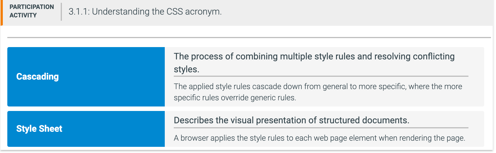

CSS (Cascading Style Sheets) is a textual language for describing how a web page is styled for visual presentation. Web browsers use CSS to determine how a web page is rendered on the screen, printed to paper, or presented via other media. The CSS acronym highlights the two main characteristics of presenting a web page:
